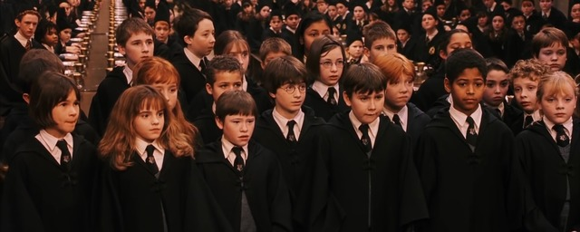
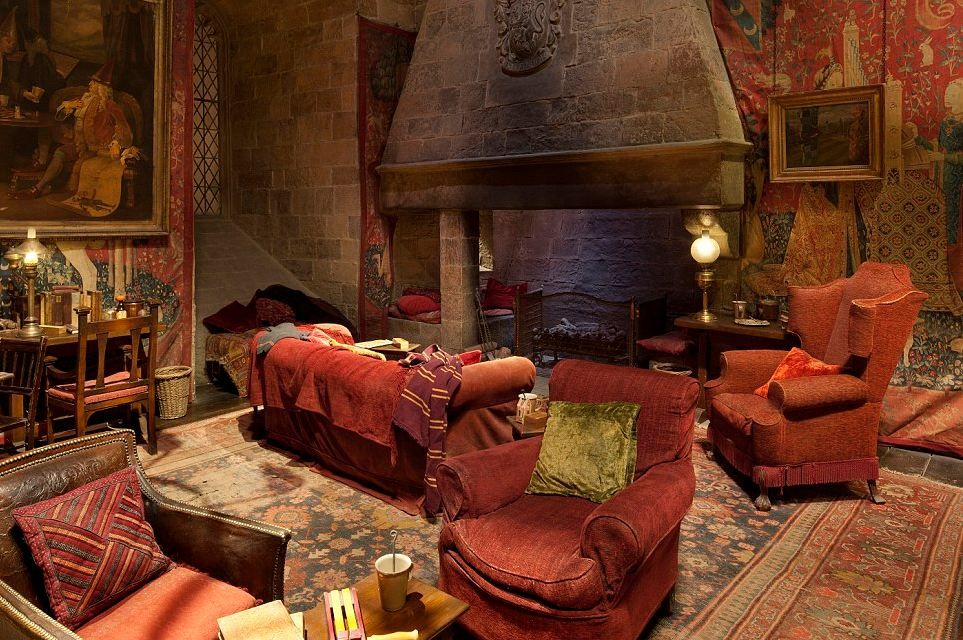
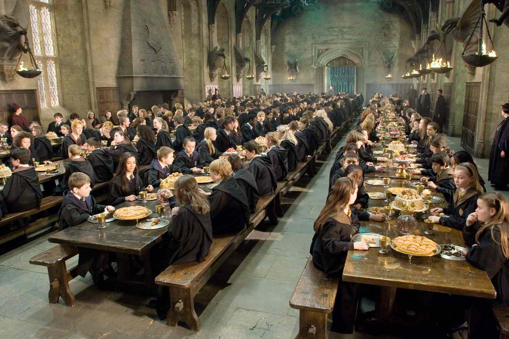

September 15, 2026

Life at Hogwarts is more than attending magical classes. Every day is filled with new adventures, lifelong friendships, and unforgettable experiences within the castle walls. Students from all four Houses come together to learn, grow, and discover the true meaning of courage, wisdom, loyalty, and ambition.

After lessons, students retreat to their House Common Rooms where they study for exams, relax beside enchanted fireplaces, play wizard chess, and spend time with classmates. Each Common Room reflects the unique personality of its House, making it a welcoming place to call home throughout the school year.

The Great Hall remains the heart of Hogwarts. Beneath floating candles and an enchanted ceiling that mirrors the sky outside, students gather for delicious meals, festive celebrations, and the famous Welcoming Feast that begins every new school year.
Outside the classroom, Hogwarts offers countless opportunities to participate in Quidditch, magical clubs, dueling practice, and special school events. These activities help students build confidence, leadership, teamwork, and memories that will last a lifetime.
Return to Daily Prophet